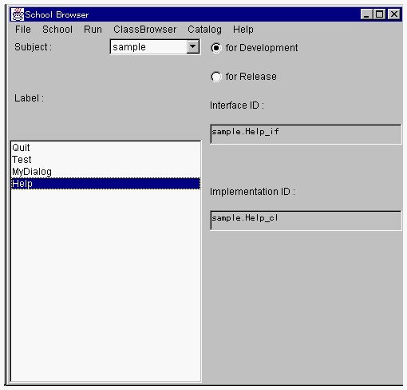
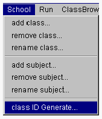
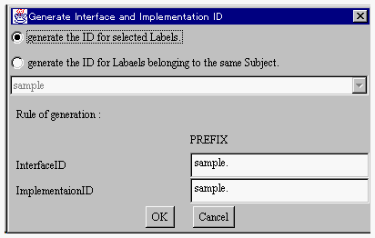
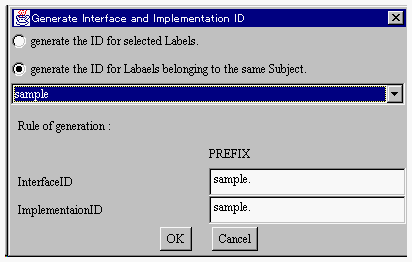

クラス識別子を自動付与する
スクールはクラス名、クラス識別子の情報から構成されます。クラス識別子の付与の手間を省力するために、スクールブラウザはクラス識別子を自動付与する機能を持っています。

1つのクラスにクラス識別子を自動付与する
- １．スクールブラウザの左側に存在するLabel:リストからクラス識別子を付与するクラスを選択してください。

２．そして、School メニューから class ID Generate メニュー項目を選択します。

- クラス識別子を自動付与するためのダイアログが開きます。

３．ラジオボタンの選択を generate the ID for selected Labels. にします。InterfaceID:、Implementation
ID: の PRIFIX入力エリアには、自動付与するクラス識別子のデフォルトの値が表示されています。これを適切なクラス識別子に変更してください。
そして、OKボタンをクリックすると、スクールブラウザの左のリストで選択されていたクラスにクラス識別子が付与されます。
サブジェクトに属するすべてのクラスにクラス識別子を自動付与する
1．スクールブラウザのSubject:リストメニューから、クラス識別子を付与するサブジェクトを選択してください。
２．そして、School メニューから class ID Generate メニュー項目を選択します。
クラス識別子を自動付与するためのダイアログが開きます。

３．ラジオボタンの選択を generate the ID for Labels belonging to the same
Subject. にします。InterfaceID:、Implementation ID: の PRIFIX入力エリアには、自動付与するクラス識別子のデフォルトの値が表示されています。これを適切なクラス識別子に変更してください。
そして、OKボタンをクリックすると、スクールブラウザで選択されていたサブジェクトのすべてのクラスの識別子が付与されます。
(c) 1996-1998 IPA, ETL, AT21, FSIABC, FXIS,
InArc, MRI, NUL, SBC, Sharp, TEC, TIS. All rights reserved.